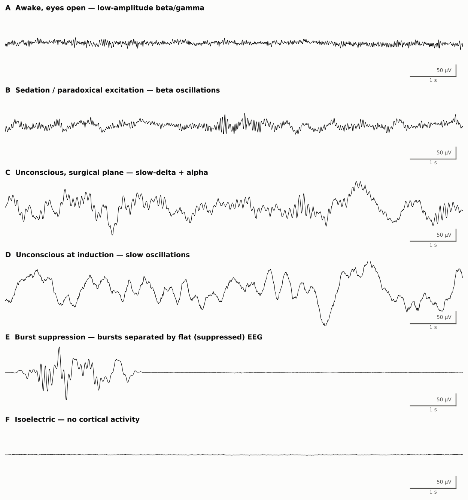
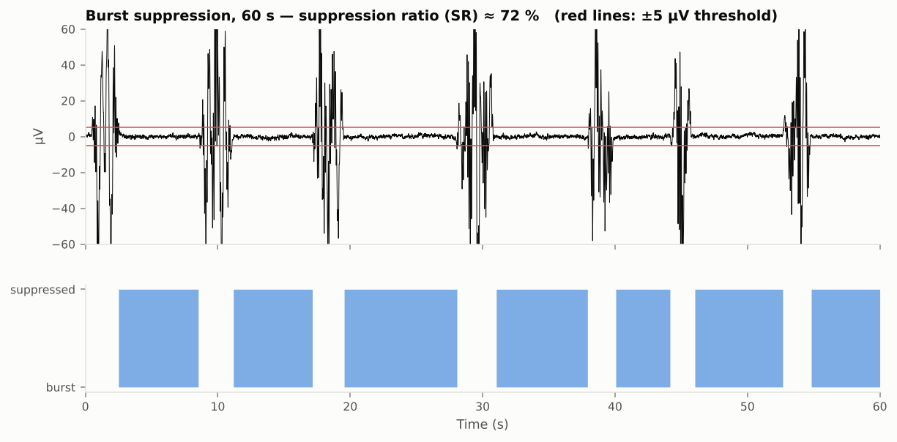
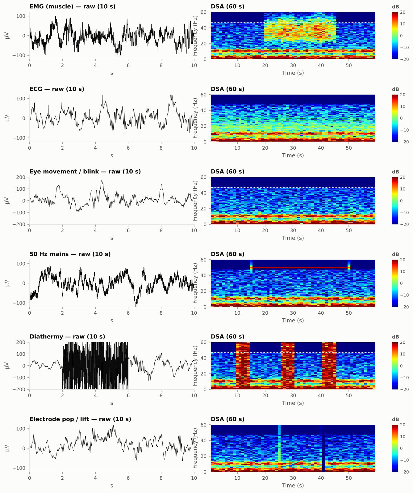

Reading the raw EEG and recognising artefacts
By the end of this page you should be able to
- Apply electrodes correctly and troubleshoot common technical problems. Delphi FD4 Delphi FD5 Delphi FD14
- Identify the fundamental raw EEG patterns and how they change from wakefulness to deep anaesthesia. Delphi RW4 Delphi RW5 Delphi FD12
- Recognise the raw EEG of each phase of an anaesthetic, from the pre-induction baseline to emergence. Delphi RW7 Delphi RW13
- Recognise burst suppression and tell it apart from spikes. Delphi RW11
- Identify common artefacts, separate technical from physiological ones, and fix them where possible. Delphi AR1 Delphi AR2 Delphi AR3 Delphi AR5
Getting a good signal
A spectrum or an index can only be as good as the signal behind it. The boot camp teaches set-up as a skill in its own right: choose the site, prepare the skin, attach the electrodes properly and keep the recording quality good for the whole case[4].
- Place the sensor before induction. Follow the manufacturer's positions on the forehead and temple for your sensor (Entropy, BIS or SedLine). The sensors differ in the number and position of electrodes.
- Prepare the skin. Clean off oil and make-up, dry the skin, and press each electrode down firmly. In research recordings Purdon's group required electrode impedance below 5 kΩ[1]. Your monitor will run its own impedance or sensor check, so let it finish.
- Check signal quality. Look at the signal quality index (SQI) or equivalent, and at the raw trace itself. A clean awake trace is low amplitude and fast. Large, irregular swings before induction usually mean an artefact.
- Record a baseline. A minute of awake EEG gives you a reference for this patient. This matters most in older patients, whose EEG amplitude is lower[3,26].
- If the forehead is in the surgical field, alternative montages are possible, for example mandibular or nasal placements, which the boot camp demonstrates[4]. Remember that reference values were developed with standard placement.
Learn the basic display controls for your device: sweep speed (time per screen), amplitude scale (µV per division) and filters. Changing the amplitude scale is often all it takes to make burst suppression or low-voltage EEG visible[4].
From awake to isoelectric
As GABAergic anaesthesia deepens, the raw EEG changes in a fairly predictable sequence. Amplitude rises and the dominant frequency falls. At the deepest levels this gives way to burst suppression and finally a flat, isoelectric trace[1,3].

| State | What the raw trace looks like | What it means |
|---|---|---|
| Awake, eyes open | Low amplitude, fast, irregular beta and gamma | Conscious. Use as the baseline |
| Sedation and paradoxical excitation | Organised beta oscillations, sometimes larger than when awake | Low-dose propofol. The patient may be disinhibited or moving |
| Unconscious, surgical plane | Large slow waves with alpha "riding" on them | The target pattern for propofol and the volatile agents |
| Induction bolus | Very large slow and delta waves, appearing 10–30 s after a propofol bolus | Loss of responsiveness, apnoea, atonia |
| Burst suppression | Bursts of activity separated by flat periods | Profoundly deep anaesthesia, or hypothermia, ischaemia or another brain insult |
| Isoelectric | Flat | Deepest anaesthesia, coma or profound hypothermia |
The phases of an anaesthetic
Baseline
Before induction, record the awake EEG and confirm the signal is clean. It helps you recognise later artefacts, and it shows you how much amplitude this particular patient has to begin with.
Induction
After a propofol bolus the EEG changes within 10–30 seconds, from low-amplitude fast activity to high-amplitude slow and delta oscillations. This coincides with loss of responsiveness, apnoea, loss of the oculocephalic reflex and atonia[1]. A further bolus can deepen the slow oscillation or turn it into burst suppression. Elderly patients can go straight into burst suppression after a standard induction dose[1].
Maintenance
Over the next few minutes the induction pattern evolves into slow-delta oscillations with a strong frontal alpha rhythm. This pattern persists through a stable propofol infusion or a volatile anaesthetic in the surgical plane[1].
Emergence
When the anaesthetic is turned off, slow-delta and alpha power fade and are gradually replaced by lower-amplitude beta and gamma activity. In the raw trace, the waves get faster and smaller. On the DSA this looks like a zipper opening as the bands pull apart[1]. Brainstem reflexes return roughly from caudal to rostral, so breathing and gagging come back before corneal and oculocephalic reflexes.
Burst suppression
Burst suppression alternates bursts of electrical activity with periods of near-silence. Enough propofol, barbiturate or volatile agent will produce it, and so will hypothermia, cerebral ischaemia and severe brain injury. It appears at lower anaesthetic doses in older patients[1,2]. When the dose rises, the suppressed periods lengthen until the EEG becomes isoelectric. The bursts themselves often carry the pattern that came before, such as slow and alpha oscillations under propofol[1].

Automated burst suppression detection differs between manufacturers and is unreliable. It can miss suppression, especially when amplitudes are low, as they often are in older patients. Look at the raw trace and the DSA yourself. Burst suppression shows on the DSA as vertical stripes. This is one of the main reasons the boot camp teaches raw EEG reading[4,3].
Spikes are different. A spike is a single sharp transient that stands out from the background. It is not a burst separated by flat EEG. On a frontal anaesthesia montage, most spikes are artefacts (ECG, electrode pops, movement): apply ShARP, below. Recognising true epileptiform activity is an advanced outcome (Delphi AC7) and is planned for a later module.
Advanced Beyond the ratio
A ratio over a fixed window reacts slowly and can be noisy. The burst suppression probability uses state-space methods to estimate, moment by moment, the probability that the brain is suppressed. It was developed to track burst suppression in real time and to support closed-loop control of medically induced coma[1].
Artefacts
Theatre is electrically noisy and patients move. Artefacts can be technical (diathermy, mains interference, a lifting electrode, warming devices) or physiological (muscle, the heart, eye movements)[4,3]. They can make an index disappear, or worse, push it falsely high or low[4].
The ShARP approach
The Safe Brain Initiative boot camp teaches a four-part check for any suspicious waveform[4]:
- Sh — Shape
- Sinusoidal, spiky, square or a step? Smooth or jagged?
- A — Amplitude
- Similar to the background EEG, much larger (blinks, diathermy) or tiny?
- R — Rhythm
- Regular, such as heart rate or exactly 50 Hz, or irregular?
- P — Point in time
- Constant, or tied to an event such as diathermy, warming, positioning, laryngoscopy or emergence?
For example, a spiky shape at about the amplitude of the EEG, recurring regularly one to two times a second throughout the case, is probably ECG[4].

| Artefact | Type | ShARP clues | Effect on the processed numbers | What to do |
|---|---|---|---|---|
| Muscle (EMG) | Physiological | Fine, jagged, high-frequency activity riding on the EEG. Broad power above about 30 Hz, often appearing with arousal, light anaesthesia or wearing-off neuromuscular block | Raises indices. On Entropy, RE rises above SE. Giving neuromuscular block removes EMG and can lower an index without any change in hypnotic depth | Think about arousal and nociception first, then about the level of block. Do not deepen the hypnotic reflexively |
| ECG | Physiological | Spiky, regular, at heart rate, constant throughout | Usually minor. It may distort low-amplitude EEG and suppression detection | Check the trace against the ECG. Reposition the sensor if it is severe |
| Eye movement and blinks | Physiological | Large, slow, smooth deflections, mainly when the patient is awake or emerging | Adds false slow-delta power | Interpret low-frequency power cautiously at induction and emergence |
| Mains (50 Hz in South Africa) | Technical | Thick, perfectly regular band. A single bright line at 50 Hz on the DSA | Can affect high-frequency features | Check electrode contact, cables and nearby equipment |
| Diathermy | Technical | Huge, saturating noise, exactly while the diathermy is active | The index is usually rejected or blanked, and the SQI drops | Wait. Do not act on numbers recorded during diathermy |
| Electrode pop or lift | Technical | Sudden step with slow recovery, or a flat or noisy channel | Gaps, false flat stretches or false suppression | Press the electrodes down, check impedance, replace the sensor |
| Forced-air warmers and other devices | Technical | New activity that starts when a device is switched on | Indices can read falsely high | Note the timing. Switch the device off briefly to test |
Whenever an index changes suddenly, look at the raw trace before you change the anaesthetic. Is it artefact? Is it EMG? Has the signal quality dropped? Only then ask whether the brain has changed[4].